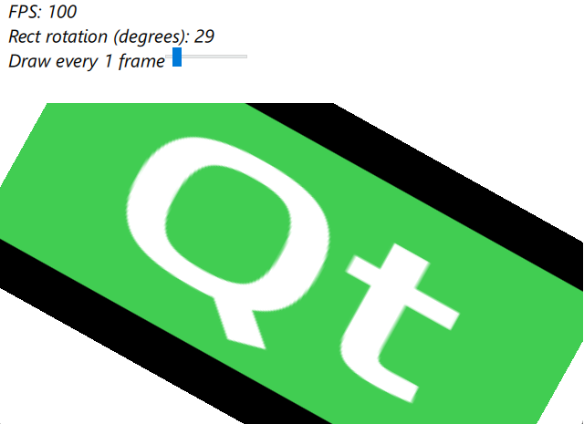

Qt Quick Examples - Item Variable Refresh Rate
A Qt Quick example shows how to setup variable refresh rate for specific parts of the UI.

This example demonstrates using the live property of a Item Layers to get a variable and independent refresh rate for Quick items. This can provide a significant boost to performance if specific parts of a UI does not need to be re-rendered every frame, but still require internal updates. Drawing parts that are static most of the time or animations that does not have to run smoothly at all times is a waste of resources. This property gives the user control over when the item is drawn.
Note: Using Item Layers may involve a performance penalty, depending on the size of the layered item subtree, due to using separate render targets (textures), which are then blended together in the main render pass. Application designers should always evaluate the impact to ensure that the benefits of using layers outweigh the potential disadvantages.
The example uses FrameAnimation to control how often the item is rendered. Useful when you only want to e.g. every second frame. Using something like a timer or other mechanics to toggle the flag is also valid.
FrameAnimation { id: frameAnimation property real fps: smoothFrameTime > 0 ? (1.0 / smoothFrameTime) : 0 running: true }
In the above snippet, the fps property is only there for visual demonstration purposes.
The item requires layer.enabled to be true, and then the item will be rendered depending on the state of layer.live as shown in the below snippet.
Item { id: qt_logo width: 230 height: 230 anchors.fill: parent anchors.topMargin: 125 layer.enabled: true layer.live: slider.value > 0 && frameAnimation.currentFrame % slider.value == 0
Using modulo operator and a slider to set the value, we can dynamically change how often the Qt logo is rendered.